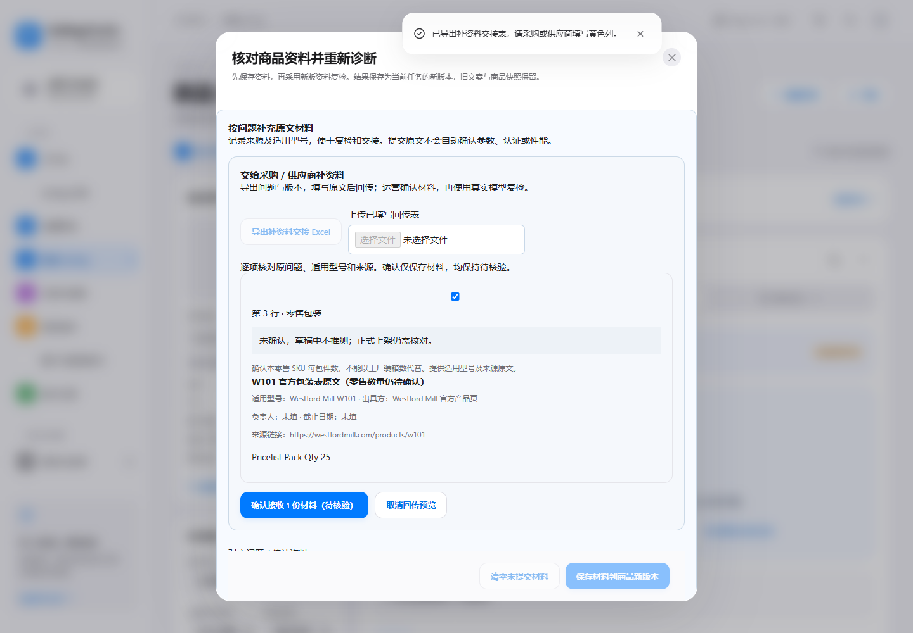
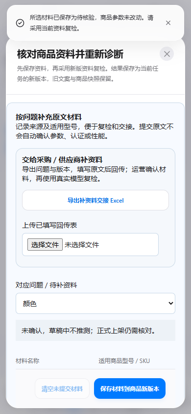
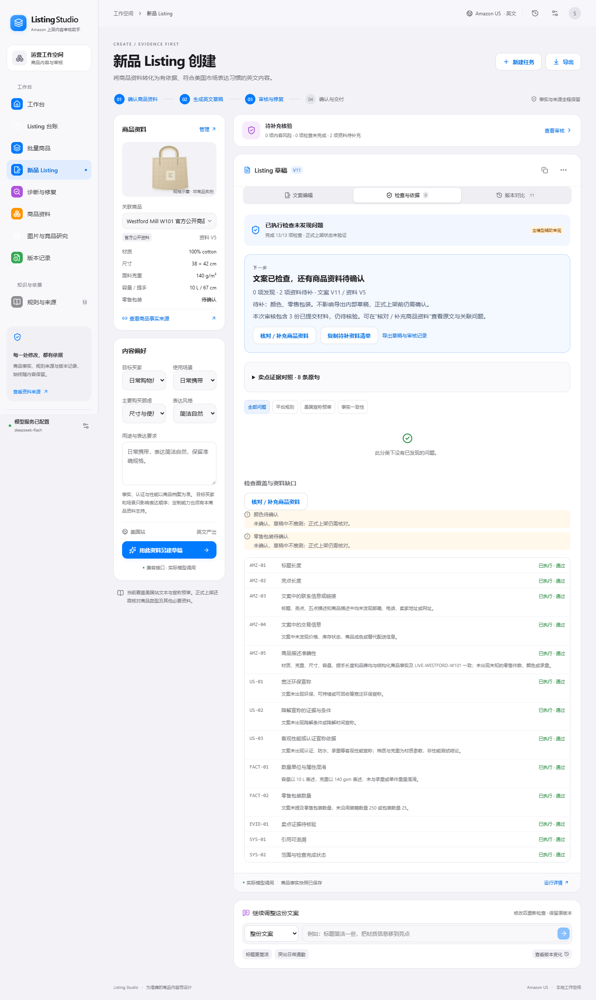
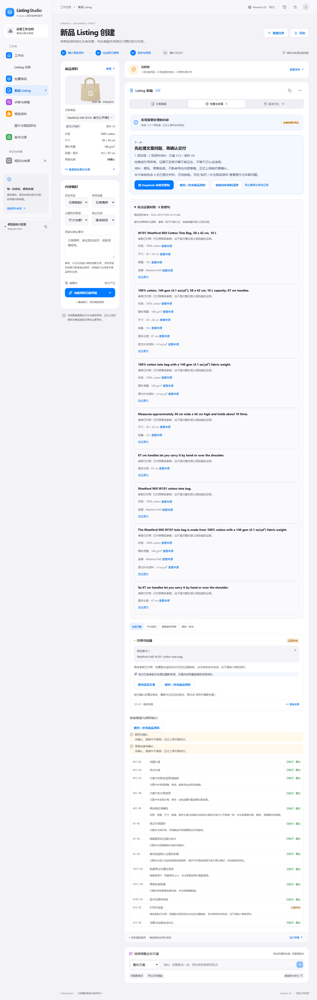

从商品事实到可交付英文 Listing
2026-10-23 · 真实公开商品 · 真实 DeepSeek · 未连接卖家后台
33 次真实响应，215,760 tokens，含排错与复验。模型曾连续两次非法 JSON，官方源曾超时，均保留失败记录。审核一致性仍需人工核对；不把程序验收称为商家试用。
完整说明 · 逐次请求与未解决问题 · 交接验收
采购原文回传预览：关联任务、适用型号、来源与待核验状态

390px 手机端交接入口与材料表单

两轮局部对话修改后的真实 V11，历史截图；不是当前版本

最终真实复检版本 V16，仍有未解决项目
